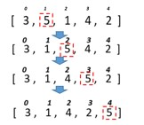

Задача 4
Умова. Для розглянутих методів сортування спробувати вивести етапи сортування шляхом виведення відповідних таблиць за зразком. Тобто кожного разу після обміну елементів вивести поточний стан масиву на екран (стрілки не потрібні).
